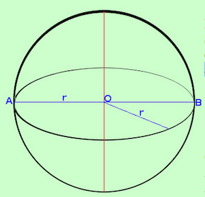

Geometria dello spazio
- ...
Antonio Pierro @antonio_pierro_
Per consigli, suggerimenti, eventuali errori o altro potete scrivere una email a antonio.pierro[at]gmail.com
Relazioni fra rette nello spazio 1/2
- Due rette nello spazio possono essere:
- Complanari: cioè giacciono su uno stesso piano
- Sghembe: cioè non giacciono sullo stesso piano
- In figura la retta rossa e la retta blu sono tra loro sghembe.
Relazioni fra rette nello spazio 2/2

- Una retta nello spazio rispetto ad un piano può essere:
- Secante: in tal caso ha un solo punto in comune con il piano
- Parallela ad una retta del piano: in tal caso non ha nessun punto in comune con il piano
- Giacente sul piano: in tal caso ha tutti i punti in comune con il piano.
- Nella figura: la retta "a" giace sul piano, la retta "b" è secante il piano, la retta "c" è sopra il piano e parallela alla retta "a"
Angoloidi

- Consideriamo un poligono ed un punto esterno al piano su cui giace il poligono:
- Definiremo angoloide lo spazio limitato da tutte le semirette uscenti dal punto dato e passanti per i punti del poligono (perimetro del poligono)
- Il punto P è chiamato vertice dell'angoloide.
Triedri

- Se il poligono "generatore" è un triangolo otteniamo l'angoloide più semplice che chiameremo Triedro
- Il triedro è lo spazio limitato da tutte le semirette uscenti dal punto dato, non giacente sul piano di un triangolo, e passanti per i punti dei lati del triangolo
- Il punto P è chiamato vertice del triedro
Poliedro
- Il poliedro è la parte di spazio limitata da un numero finito di poligoni, giacenti su piani diversi ed aventi, due a due, un lato in comune
- Ogni poligono si chiama Faccia
- L'insieme delle facce si chiama Superficie poliedrica
- La parte di spazio limitata dalla superficie poliedrica si chiama Volume del poliedro
- I lati dei poligoni si chiamano spigoli del poliedro
- I vertici dei poligoni si chiamano vertici del poliedro
Tipo di poliedro
- Il tipo di poliedro è individuato dal numero di facce della superficie poliedrica:
- Tetraedro: poliedro con 4 facce
- Pentaedro: poliedro con 5 facce (esempio: piramide)
- Esaedro: poliedro con 6 facce (esempio: cubo)
Prisma indefinito
- Consideriamo un poligono qualunque sul piano \(\alpha\) e consideriamo un poligono congruente ad esso sul un altro piano \(\beta\) parallelo ad \(\alpha\)
- Consideriamo poi le congiungenti i punti corrispondenti dei perimetri dei due poligoni congruenti: in tal modo l'insieme di tali rette definiscono una "superficie prismatica" indefinita.
- La parte di spazio circondata dalla superficie prismatica è chiamata "prisma indefinito"
Prisma 1/2
- Si dice prisma la parte di spazio racchiusa da un prisma indefinito compresa fra due sezioni parallele.
- Le sezioni parallele sono chiamate basi del prisma.
- Le altre facce diverse dalle basi sono chiamate facce laterali (sono sempre parallelogrammi).
- Se gli spigoli laterali sono perpendicolari alle basi avremo un prisma retto; il prisma in figura, invece, è obliquo.
Prisma 2/2
- Se i poligoni di base del prisma retto sono poligoni regolari diremo che il prisma è regolare
Concetto di volume
- Il volume è inteso come spazio racchiuso entro la superficie di un solido.
- Siccome per misurare dobbiamo usare una unità che sia dello stesso tipo dell'oggetto misurato useremo uno dei solidi più semplici: il cubo.
- Come unità di misura nello spazio useremo il cubo unitario, cioè il cubo con lato l'unità di misura lineare.
Volume del parallelepipedo rettangolo
- Il volume del parallelepipedo rettangolo si misura con il prodotto delle sue tre dimensioni: \[ V = a * b * h \]
- Il cubo che può essere visto come un parallelepipedo rettangolo con le tre dimensioni uguali: \[ V = l * l * l = l^3 \]

Volume del parallelepipedo retto
- Consideriamo il parallelepipedo retto (ABCDGHIL) (figura in blu) esso ha come base un parallelogramma.
- In rosso il rettangolo equivalente che diventa la base di un parallelepipedo rettangolo (ABEFGHMN)
- Il volume del parallelepipedo retto si trova moltiplicando l'area di base per la misura dell'altezza: \[ Volume = A_{superficie\ di\ base} * h \]
Volume del prisma retto
- Considerando un qualunque prisma retto (la base sarà un poligono con n lati)
- Il volume del prisma retto si trova moltiplicando l'area del poligono di base per la misura dell'altezza \[ Volume = A_{superficie\ di\ base} * h \]
Piramide
- Si definisce piramide la parte di spazio racchiusa da un angoloide ed un piano non passante per il vertice dell'angoloide e che ne intersechi tutti gli spigoli.
- Chiameremo:
- il poligono base della piramide
- i triangoli dell'angoloide facce laterali
- la distanza fra il punto V ed il piano altezza h della piramide
Piramide retta
- Consideriamo l'insieme dei poligoni circoscritti ad una circonferenza
- se la nostra piramide ha come base uno di tali poligoni e la perpendicolare dal vertice cade esattamente nel centro del cerchio inscritto nel poligono allora diremo che tale piramide è retta
- Diremo infine regolare una piramide retta che abbia come base un poligono regolare
Area della superficie della piramide retta
- Se la piramide è retta, le altezze di tutte le facce sono congruenti e si chiamano apotema.
- L'area della superficie laterale di una piramide retta si ottiene moltiplicando la lunghezza del perimetro di base per quella dell'apotema e dividendo il prodotto per 2. \[ A_{laterale} = \frac {p * a}{2} \]
- Se all'area della superficie laterale si aggiunge l'area della figura di base si ottiene l'area della superficie totale. \[ A_{totale} = A_{laterale} + A_{base} \]
Volume della piramide retta
- Poichè una piramide è equivalente alla treza parte di un prisma avente la base equivalente a quella della piramide e per altezza la stessa altezza il volume della piramide è un terzo di quello del prisma suddetto.
- Il volume di una piramide si ottiene moltiplicando l'area di base per la lunghezza dell'altezza e dividendo il prodotto per 3. \[ V = \frac{A_{base} * h}{3} \]
Definizione di cilindro
- Definiamo cilindro la parte di spazio percorsa da un rettangolo quando compie una rotazione completa attorno ad un suo lato
- AB = CD è il raggio del cilindro
- BC e' l'altezza del cilindro
Area della superficie del cilindro
- Sviluppando la superficie del cilindro su un piano otteniamo 2 cerchi (le basi) ed un rettangolo che è la superficie laterale.
- Essendo la base un cerchio il perimetro di base corrisponde alla lunghezza della circonferenza, quindi supponendo di conoscere il raggio di base r avremo che il perimetro di base vale: \(2 * \pi * r\)
- Se poi vogliamo calcolare l'area della superficie totale Ast dovremo sommare alla superficie laterale le aree delle due basi che corrispondono al doppio dell'area di un cerchio: \[ A_{superficie\ totale} = A_{sl} + 2 A_{sb} = 2 \pi r h + 2 \pi r^2 = 2 \pi r(h + r) \]
Volume del cilindro
- Il volume di un cilindro si ottiene moltiplicando l'area di base per la lunghezza dell'altezza: \[ V = \pi r^2 h \]
Definizione di cono
- Definiamo cono la parte di spazio percorsa da un triangolo rettangolo quando compie una rotazione completa attorno ad un suo cateto
- AB è il raggio = r del cono
- BC è l'altezza = h del cono
- AC è l'apotema = a del cono
Area della superficie del cono
- Sviluppando la superficie del cono su un piano otteniamo la figura a destra.
- L'area del settore circolare si ottiene moltiplicando l'arco di base per l'apotema e dividendo il risultato per due. \[ A_{sl} = 2 \frac{\pi r a}{2} = \pi r a \]
- l'area della superficie totale \(A_{st}\) è la somma della superficie laterale e l'area di base che corrisponde all'area del cerchio: \[ A_{superficie\ totale} = A_{sl} + A_{sb} = \pi r a + \pi r^2 = \pi r (a + r) \]
Volume del cono
- Il volume di un cono si ottiene moltiplicando l’area di base per la misura dell'altezza e dividendo tale prodotto per tre:: \[ V = \frac{A_{sb} * h}{3} = \frac{\pi r^2 h}{3} \]
Sfera

- Si definisce superficie sferica la zona dei punti dello spazio equidistanti da un punto fisso detto centro
- Si definisce sfera lo spazio limitato da una superficie sferica.
- Possiamo anche definire la sfera come solido di rotazione: area spazzata da una semicirconferenza in una rotazione completa attorno ad un suo diametro
Area e volume della sfera
- L'area della superficie di una sfera equivale a 4 volte l'area del suo cerchio massimo: \[ A_{sfera} = 4 \pi r^2 \]
- Il volume della sfera: \[ V = \frac{4}{3} \pi r^3 \]
quattro terzi pigreco erre tre
Conclusione
- ....